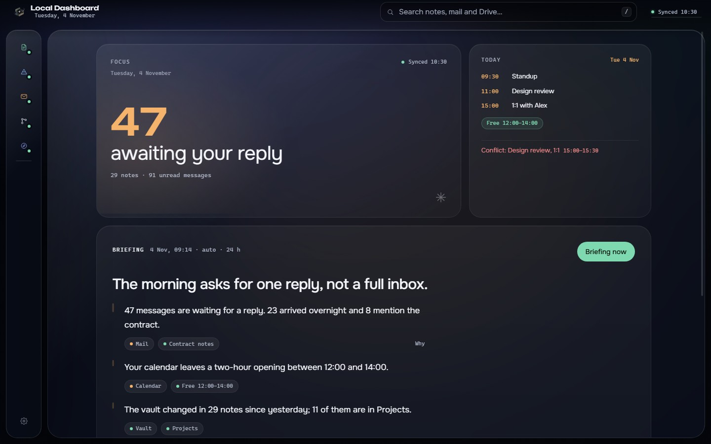
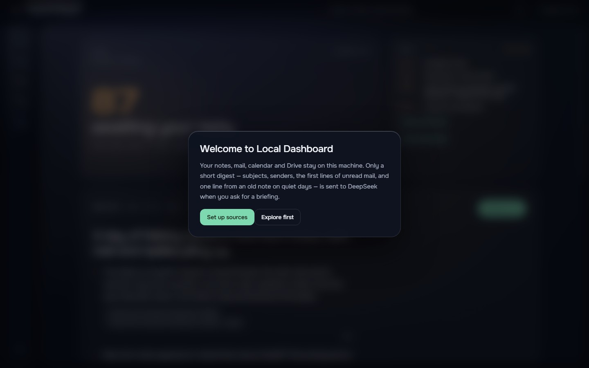
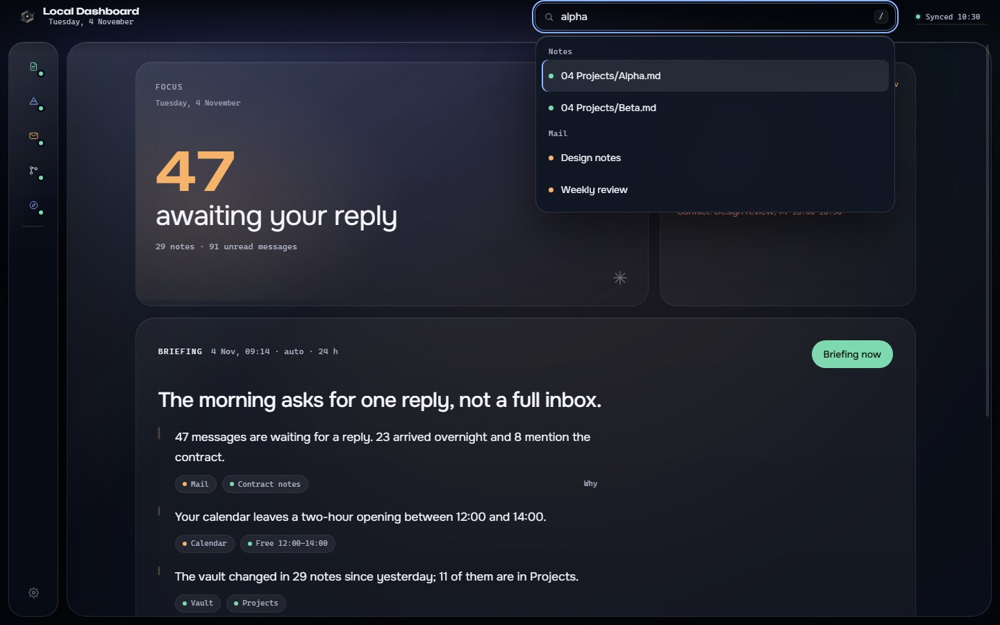
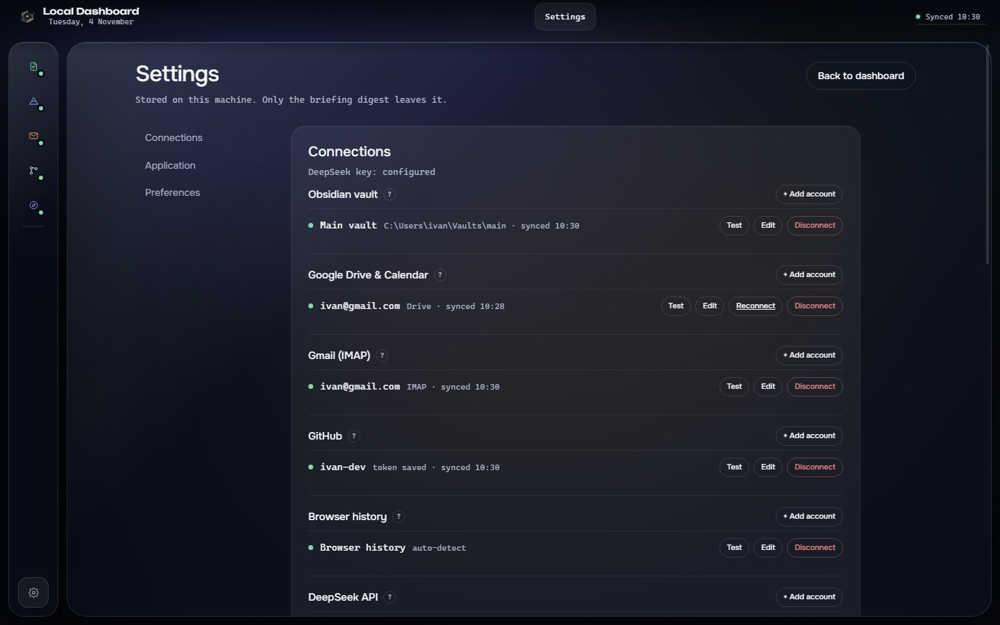
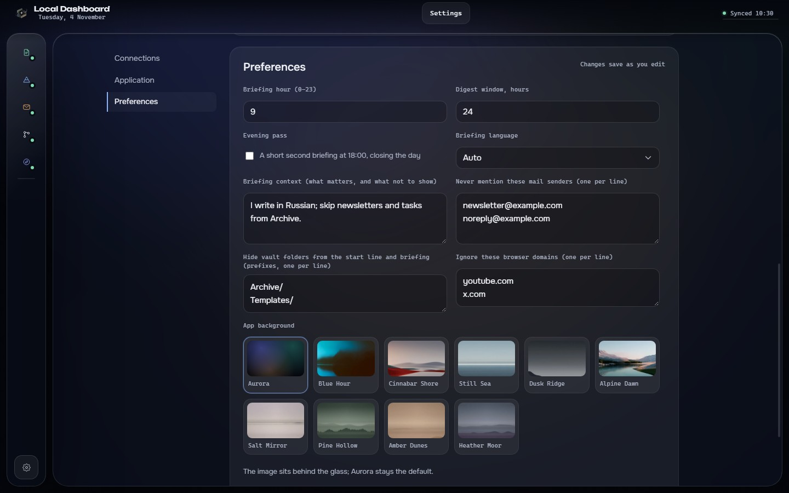

The Aurora Glass shell: a frameless window on a slow aurora, a source rail, the focus panel and the briefing. Dark only; a wallpaper can sit behind the glass.

Dashboard — focus, today's calendar and the briefing inside the glass stage.

First run — what stays local and what is sent to DeepSeek.

Search — notes, mail and Drive suggestions in the command overlay.

Settings — connections with hints, application panel, preferences and the wallpaper picker.

Preferences — briefing settings and the nine app backgrounds; Aurora is the default.